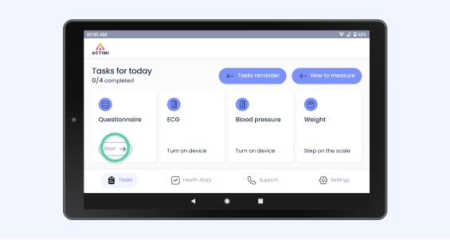
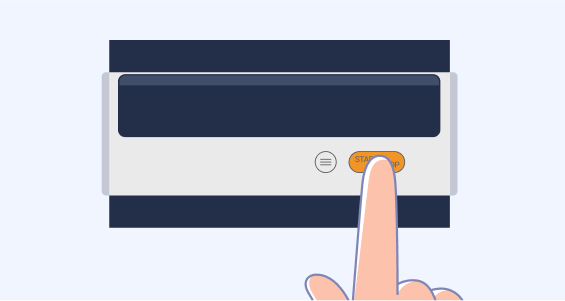
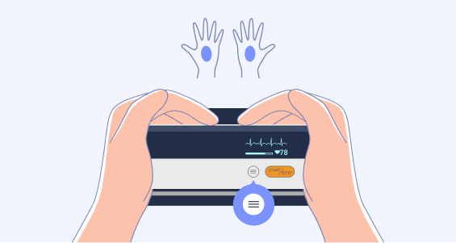
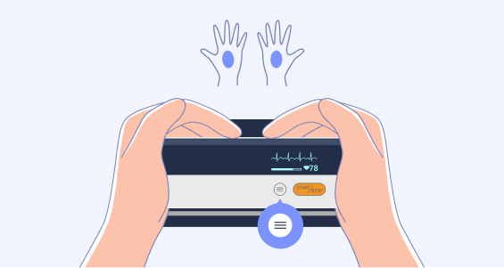
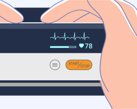
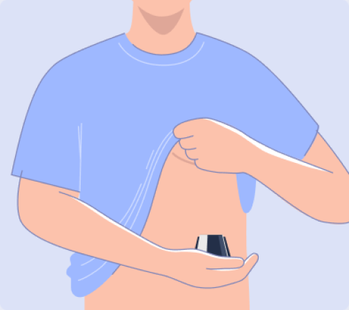
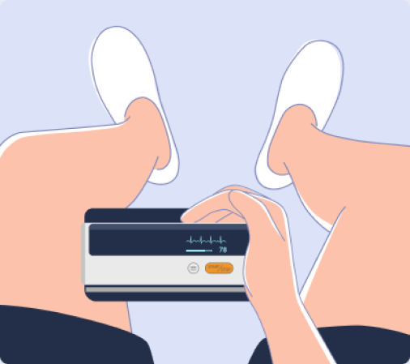
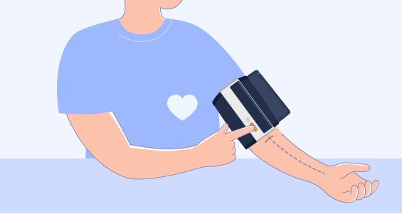

Einführung
Messen Sie Ihre Gesundheitswerte einmal täglich, am besten zur gleichen Zeit, und beantworten Sie den Symptomfragebogen auf Ihrem Patienten-Tablet. Wir empfehlen, die Messungen direkt nach dem Aufstehen durchzuführen. Auf diese Weise sind die Werte von Tag zu Tag vergleichbar und Ihr Gesundheitszustand kann bestmöglich beurteilt werden.
Ihre Messergebnisse werden sicher und datenschutzkonform an medizinisches Fachpersonal und Ihren behandelnden Arzt übermittelt.
Stellen Sie sicher, dass Ihre Geräte aufgeladen sind. Verwenden Sie zum Aufladen Ihrer Geräte die mitgelieferten Ladekabel, um Ihr Patienten-Tablet und den Blutdruck-/EKG-Monitor aufzuladen. Bitte verwenden Sie die mitgelieferten AAA-Batterien für die Waage. Entfernen Sie vor der Verwendung der Waage den Batterieschutzdeckel auf der Rückseite.

Starten des Tablets
Schalten Sie Ihr Patienten-Tablet ein oder aus, indem Sie kurz auf die Einschalttaste an der Seite drücken. Die ACTIMI Telecare App wird automatisch gestartet. Wenn Ihr Patienten-Tablet nicht funktioniert, stellen Sie sicher, dass es aufgeladen ist, und halten Sie die Taste 3 Sekunden lang gedrückt.
Während der Messungen muss das Patienten-Tablet eingeschaltet sein und sich im selben Raum wie der EKG-Monitor und die Waage befinden, damit die Messwerte erfolgreich übertragen werden können.
Nach den Messungen können Sie das Patiententablett durch kurzes Drücken der Einschalttaste ausschalten.
Ausfüllen des Fragebogens
- Tippen Sie auf die Schaltfläche "Start" des Fragebogens auf dem Bildschirm "Aufgaben". 
- Tippen Sie dann auf Ja oder Nein, je nachdem, wie Sie sich fühlen.

- Nachdem Sie die Fragen beantwortet haben, klicken Sie einfach auf "Fertig" stellen und schon haben Sie Ihre erste Aufgabe erfolgreich erledigt.

EKG messen
Bevor Sie Ihr EKG messen, beachten Sie bitte die folgenden Punkte:
- Die EKG-Elektrode sollte direkt auf der Haut positioniert werden.
- Wenn Ihre Haut oder Hände trocken sind, befeuchten Sie sie vor der Messung mit einem feuchten Tuch.
- Wenn die EKG-Elektroden verschmutzt sind, entfernen Sie den Schmutz mit einem weichen, mit Desinfektionsalkohol angefeuchteten Tuch oder Wattebausch.
- Berühren Sie während der Messung Ihren Körper nicht mit der Hand, mit der Sie die Messung vornehmen.
- Bitte beachten Sie, dass es keinen Hautkontakt zwischen Ihrer rechten und linken Hand geben darf. Andernfalls können die Messungen nicht korrekt durchgeführt werden.
- Halten Sie während der Messung still, sprechen Sie nicht und halten Sie das Gerät ruhig. Bewegungen jeglicher Art verfälschen die Messungen.
- Messen Sie im Sitzen und nicht im Stehen.
So starten Sie eine EKG-Aufzeichnung
- Schalten Sie das Gerät durch kurzes Drücken der Taste ein. Wenn es nicht startet, prüfen Sie, ob es aufgeladen ist. 
- Vergewissern Sie sich, dass Sie vor dem Start denselben Bildschirm sehen. Wenn nicht, drücken Sie kurz die Taste.
- Drücken Sie die Taste
 am Gerät, um die Messung zu starten. Nehmen Sie das Gerät in Ihre Handflächen, wie auf dem Bild gezeigt. Warten Sie 30 Sekunden, bis die Messwerte angezeigt werden.

am Gerät, um die Messung zu starten. Nehmen Sie das Gerät in Ihre Handflächen, wie auf dem Bild gezeigt. Warten Sie 30 Sekunden, bis die Messwerte angezeigt werden.


Um die EKG-Aufzeichnung erneut zu starten, drücken Sie die Taste, um zum Startbildschirm zurückzukehren. Drücken Sie dann die  Taste .
Taste .
Qualität der EKG-Messung
Die Qualität der EKG-Messung ist je nach Messmethode und Person unterschiedlich. Eine gute Qualität der Ableitung ist entscheidend für die Beurteilung Ihres Gesundheitszustandes.
Sie können die Qualität der Ableitungen auf dem Display Ihres Geräts sehen, während Sie Ihr EKG messen. Achten Sie auf gut definierte, gleichmäßige Spitzen der Herzkurve.
Schlechte EKG-Messqualität

Gute EKG-Messqualität
Messmethoden
Es gibt vier Methoden zur EKG-Aufzeichnung. Wählen Sie die Messmethode "Hand - Hand". Wenn Sie eine schlechte EKG-Ableitungsqualität erhalten, probieren Sie die folgenden EKG-Messpositionen aus und wählen Sie in Zukunft diejenige mit der besten EKG-Ableitungsqualität.
Hand-Hand

Hand-Brust

Hand-Unterleib
Rechte Hand-linkes Bein
Blutdruck messen
Um genaue Messungen zu gewährleisten, sollten Sie die folgenden Hinweise beachten:
- Ruhen Sie sich mindestens fünf Minuten aus, bevor Sie Messungen vornehmen.
- Stress erhöht den Blutdruck. Vermeiden Sie Messungen, wenn Sie gestresst sind.
- Setzen Sie sich auf einen Stuhl, schlagen Sie die Beine nicht übereinander und stellen Sie die Füße flach auf den Boden. Legen Sie Ihren Arm so auf einen Tisch, dass sich die Manschette auf Höhe Ihres Herzens befindet.
- Während der Messung sollten Sie stillhalten, nicht sprechen und die Manschette nicht zusammendrücken.
So starten Sie eine Blutdruckmessung
- Schalten Sie das Gerät durch kurzes Drücken der Taste ein. Wenn es nicht startet, prüfen Sie, ob es aufgeladen ist.
- Vergewissern Sie sich, dass Sie vor dem Start denselben Bildschirm sehen. Wenn nicht, drücken Sie kurz die Taste .
- Legen Sie die Manschette um den Oberarm, etwa 1 bis 2 cm oberhalb des Ellenbogengelenks, wie in der Abbildung gezeigt. Legen Sie die Manschette direkt auf die Haut, da Kleidung einen schwachen Puls verursachen und zu Messfehlern führen kann.
- Drücken Sie die , um die Blutdruckmessung zu starten. Das Messgerät entlüftet die Manschette automatisch und langsam, während die Messungen durchgeführt werden. Eine typische Messung dauert etwa 30 Sekunden. 
- Die Messwerte werden angezeigt, wenn die Messung beendet ist.

Sie können die Taste erneut drücken, um die Blutdruckmessung zu beenden.
Nach der Messung
Das Messgerät entlüftet die Manschette automatisch, sobald die Messungen abgeschlossen sind. Drücken Sie die Taste , um das Gerät nach der Messung auszuschalten. Nehmen Sie die Manschette ab.
Gewicht messen


- Stellen Sie die Waage auf eine harte, ebene Oberfläche. Die Verwendung der Waage auf einer weichen Oberfläche wie Teppich oder Linoleum kann die Genauigkeit der Waagenanzeige beeinträchtigen.
- Um die Genauigkeit des Wiegens zu gewährleisten, treten Sie bitte vorsichtig auf die Waage, um sie aufzuwecken, und warten Sie mindestens 10 Sekunden, bevor Sie auf der Waage wiegen. Sie müssen die Waage auch aufwecken, wenn sie bewegt wurde.
- Stellen Sie sich auf die Körperwaage, bis Sie Ihr Gewicht in der Anzeige der Waage sehen können. Sobald der Wert in der Geräteanzeige feststeht und nicht blinkt, ist die Messung abgeschlossen.
Vielen Dank und alles Gute